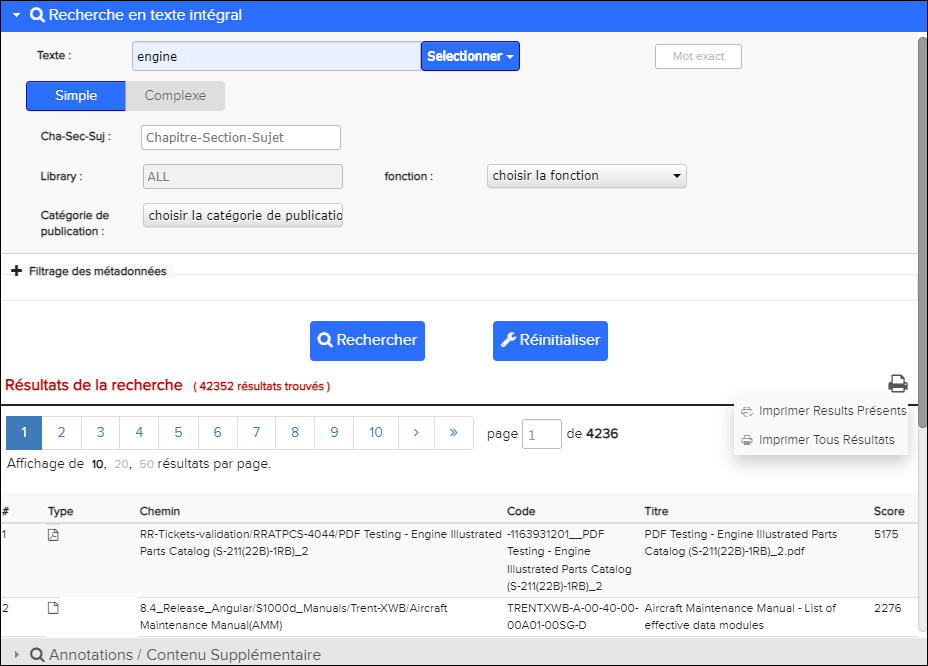
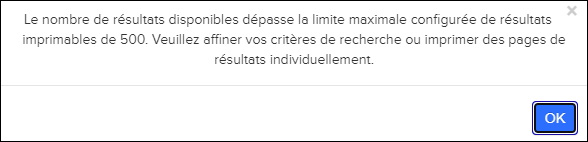
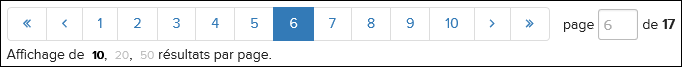
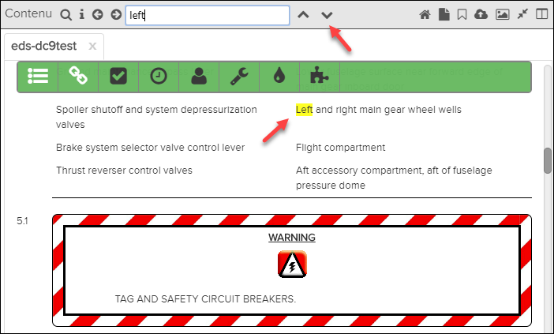
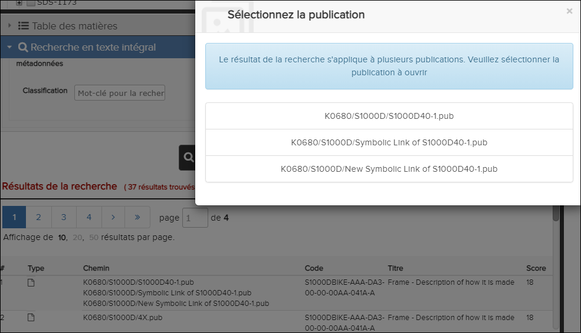
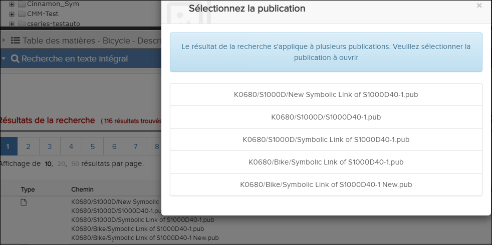

La
Recherche en texte intégral est un moyen rapide de trouver
des ensembles de mots ou d'expressions dans les publications, y compris toutes les
pièces jointes prises en charge avec des données de texte lisibles par machine. Pour
certaines publications, il offre également la possibilité de trouver FINs et
références. Reportez-vous à la sous-fenêtre de
Recherche en texte intégral. Lorsque vous effectuez une
Recherche en texte intégral, vous pouvez rechercher une
bibliothèque / une publication sélectionné ou rechercher dans toutes les
bibliothèques.Vous pouvez également rechercher dans les champs de métadonnées des
manuels contenant des métadonnées.
Remarque : Si la publication contient des métadonnées,
une configuration contrôle si les champs de filtrage des métadonnées sont
affichés ou masqués.Si les champs sont masqués, vous pouvez sélectionner le +
(plus) à côté de la zone de Filtrage des métadonnées pour
afficher ces champs.
Les données textuelles des graphiques vectoriels peuvent également être recherchées
pour certains publications ATA.
Remarque : Seuls les manuels ATA prennent en charge la
recherche graphique vectorielle. Ces manuels doivent contenir un index graphique
vectoriel, généré par KCa. En cliquant sur les références graphiques dans les
résultats de la recherche, vous ouvrirez directement le volet
graphique.
Si l'option Partie a été activée pour la recherche, Pinpoint
navigue vers la première partie. Chaque fois qu'une nouvelle pièce est sélectionnée,
une fenêtre contextuelle avec le numéro de pièce défini est mise en évidence.
Démarrage d'une Recherche en texte intégral
Vous pouvez lancer une recherche de Recherche en texte
intégral
dans la barre d’en-tête ou directement dans le
volet Recherche en texte intégral. Si vous lancez la
recherche à partir de la barre d’en-tête, entrez le texte sur lequel vous souhaitez
effectuer la recherche. Après avoir saisi ou sélectionné du texte et appuyé sur
Entrée, vous serez dirigé vers le volet
Recherche de texte intégral, où vous pourrez afficher les
résultats de la recherche et éventuellement ajouter d'autres paramètres de
recherche.
Si la fonction de recherche prédictive avec saisie semi-automatique est activée, une
liste déroulante apparaît avec des suggestions de mots clés en fonction de
l'historique de recherche, des fautes d'orthographe courantes, des synonymes et des
abréviations. Sélectionnez un mot-clé et appuyez sur
Entrée.
Remarque : Si le début de votre saisie correspond à la suggestion la plus pertinente,
cette suggestion est remplie automatiquement.
Vous serez dirigé vers le
volet
Recherche en texte intégral, où vous pourrez afficher les
résultats de la recherche et éventuellement ajouter d'autres paramètres de
recherche.
- Vous pouvez utiliser les raccourcis clavier pour rechercher plus
efficacement. Lorsque la suggestion la plus pertinente est remplie
automatiquement, cliquez sur la flèche droite pour configurer cette
sélection. Utilisez la touche de tabulation et les flèches haut / bas pour
naviguer entre les suggestions de la liste.
- Vous pouvez modifier la langue des suggestions de mots clés en cliquant sur
l'icône d'indicateur située dans la barre de
Recherche. Par exemple:
Reportez-vous à "Configuration de la recherche prédictive avec saisie
semi-automatique" dans le
Flatirons Pinpoint Configuration Guide.
Vous pouvez également sélectionner Avancé dans la liste
déroulante de la barre de recherche. menu pour accéder directement au volet
Recherche de texte intégral.
Le texte de substitution dans la barre de recherche correspond au type de recherche
que vous effectuez actuellement. Par exemple, si vous recherchez une bibliothèque,
le texte "Rechercher dans la bibliothèque" apparaît dans la barre de recherche.
Si votre administrateur a activé le privilège Accès uniquement aux
révisions en cours, les publications qui ne sont pas à jour
n'apparaissent pas dans les résultats de la recherche. Vous devez mettre à jour la
dernière révision avant que ces publications ne soient disponibles. Faire référence
à La fenêtre de Librairie.
Veuillez suivre les étapes suivantes:
Un indicateur de chargement apparaît avant les résultats renvoyés dans le volet
Résultats de la recherche (situé juste en dessous du volet
Recherche en texte intégral). Le nombre total de documents renvoyés est indiqué
entre parenthèses à la droite de l'en-tête Résultats de la
recherche. Par exemple: “(639 résultats trouvés)”.
Cette liste
comprend les publications correspondant aux critères de recherche. Les documents
avec le plus grand nombre de résultats sont placés en haut de la liste des
résultats. Lorsque vous effectuez une recherche dans toutes les bibliothèques, les
résultats de la recherche incluent toutes les bibliothèques et publications, y
compris les publications Tech Ops.
Remarque : Lors de la recherche dans un document
contenant des métadonnées, les résultats de la recherche peuvent inclure des
occurrences dans les métadonnées qui n'existent pas dans le document. Étant
donné que le texte de recherche est uniquement dans les métadonnées, le document
ne l'affichera pas lors de son affichage dans le volet
Contenu.
Le nombre de résultats par document est
affiché dans la colonne Score la plus à droite. Les informations disponibles dans
les autres colonnes varient en fonction du type de document. Par exemple, les
documents provenant d'un module de données ATA peuvent ont un
Code répertorié, mais les pièces jointes n'ont pas de
Code.
La colonne
Type dans
les résultats de la recherche contient des icônes qui indiquent le type de ressource
(PDF, Data Module ou Graphic). Lors de la sélection d'un résultat de recherche
graphique, les termes de recherche rempliront automatiquement
Content
Pane Search et mettront en surbrillance les résultats en jaune. Le
terme de recherche remplira également automatiquement
Graphic Pane
Search et affichera les termes correspondants dans le graphique en
rouge.
Remarque : La Graphic Search ne prend en charge que
les images SVG et les résultats de la recherche correspondent à la dernière
version du manuel.
Remarque : Les images SVG téléchargées sur un DM en mode
création sont également incluses dans le résultat de la
recherche.

Résultats de la recherche en texte intégral
Dans la zone Résultats de la recherche, cliquez sur
l'icône et Imprimer la page des
résultats de la recherche et l'icône Imprimer tous les
résultats de la recherche s'affiche pour imprimer les résultats de
la recherche au format PDF.
L'icône Imprimer la page des résultats
de recherche vous permet d'imprimer les résultats de la recherche à
partir de la page affichée.
L'icône
Imprimer tous les résultats de
la recherche vous permet d'imprimer toutes les pages de résultats de
recherche.
Remarque : Dans le cas où il y a trop de résultats à imprimer (le dépassement
du nombre maximum par défaut configuré sera fixé à 500 résultats), le message
ci-dessous indique:

Faire référence à
"Configuring the Print Option for Print All Search Limit" dans
Flatirons Pinpoint
Configuration Guide.
Si plus de 10 documents sont retournés, la liste sera
paginée. Vous pouvez naviguer entre les pages à l’aide des touches numériques
situées au-dessus et au-dessous de la liste des résultats. Vous pouvez également
taper le numéro de la page directement dans le champ
Page.
Vous pouvez également sélectionner le nombre de résultats à afficher par page:
10 (par défaut),
20 ou
50.

Boutons de numéro de volet
Remarque : Lorsque vous effectuez une recherche dans toutes les bibliothèques, les
résultats de la recherche ne sont pas paginés. Par défaut, les résultats
affichent les 100 premiers résultats des résultats combinés de chaque source de
données configurée. Vous pouvez personnaliser le nombre de résultats qui
s'affiche. Faire référence à "Configuring the Result Count for Searching All
Libraries" dans Flatirons Pinpoint Configuration Guide.
Lorsque
vous cliquez sur un document renvoyé, la sous-fenêtre
Contenu
affiche la partie du document contenant la première occurrence du mot recherché. Les
mots de recherche sont mis en surbrillance et vous naviguez entre les résultats de
la recherche en cliquant sur les boutons Suivant / Précédent (flèche bas / haut) de
la barre d’outils du volet
Contenu.

Boutons de recherche
Recherche dans une publication PDF
Lorsque vous effectuez
une recherche de texte simple dans un document PDF et que vous cliquez sur un
résultat, le PDF s'ouvre dans le volet Contenu. L'application localise le premier
coup et le surligne pour indiquer que le hit est net. Les coups non focalisés sont
surlignés dans une couleur différente. Vous pouvez utiliser les flèches gauche et
droite pour naviguer dans les résultats de recherche. Ceci est un exemple de la
surbrillance les coups:

Si vous effectuez
une recherche en texte intégral dans un PDF à l'aide d'un
opérateur, tel que ET, les mots de recherche ne sont pas mis en surbrillance. Cette
message s’affiche lorsque vous effectuez une recherche avec un opérateur:
Ce
message s’affiche lorsque vous effectuez une recherche avec un opérateur:
Recherche en texte intégral dans un message PDF
Il existe également une option
Recherche en texte intégral
disponible uniquement pour les manuels PDF.Vous pouvez effectuer une
Recherche en texte intégral avec le Titre de la
publication et la Description de la publication que vous avez saisis lors de la
publication de la publication PDF dans Data Manager. Vous pouvez effectuer une
recherche à l’aide d’un titre de publication complet ou partiel ou d’une description
de publication.
Recherche dans une publication de lien
symbolique
Lorsque vous effectuez une a Recherche en texte
intégral sur une seule publication de lien symbolique, le processus
est le même que pour une recherche sur d'autres publications. Vous cliquez sur un
résultat de recherche et la publication s'ouvre dans le volet
Contenu.
Il existe certaines différences lors de
l'exécution d'une recherche sur plusieurs publications de liens symboliques:
- Recherche avec plusieurs publications de liens symboliques (même
bibliothèque)
Sélectionnez la bibliothèque et effectuez une
Recherche en texte intégral . Les résultats de
la recherche apparaissent dans un seul enregistrement. Lorsque vous
sélectionnez l'enregistrement, la boîte de dialogue
Sélectionnez la publication à ouvrir. Par
example:

Sélectionnez la publication (Publication
de liens symboliques - Même bibliothèque)
- Recherche avec plusieurs publications de liens symboliques (différentes
bibliothèques)
Entrez le texte dans le champ
Recherche de la
Barre d’action pour
rechercher dans les publications de liens symboliques. Les résultats de
la recherche apparaissent dans un seul enregistrement. Lorsque vous
sélectionnez l'enregistrement, la boîte de dialogue
Sélectionnez la publication s'affiche. Vous
devez sélectionner la publication à ouvrir. Par example:

Sélectionnez la publication (Publication de liens symboliques
- Différentes bibliothèques)
Seuls les manuels ATA prennent en charge la recherche graphique
vectorielle. Ces manuels doivent contenir un index graphique vectoriel, généré par
KCA. En cliquant sur les références graphiques dans les résultats de la recherche,
vous ouvrirez directement le volet graphique.
Exclure le contenu inutile de
la recherche